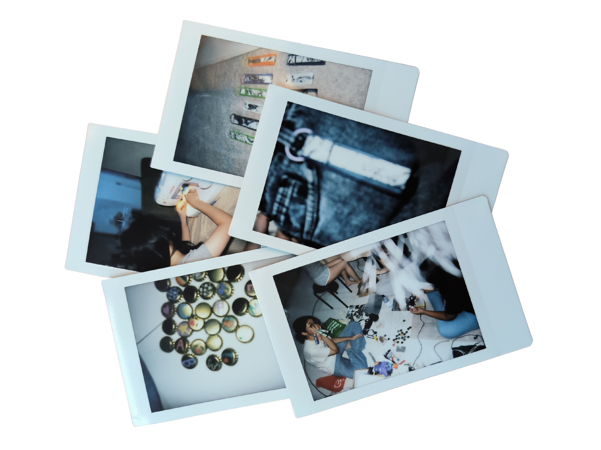
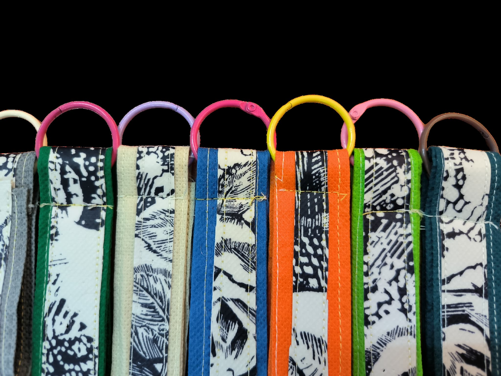
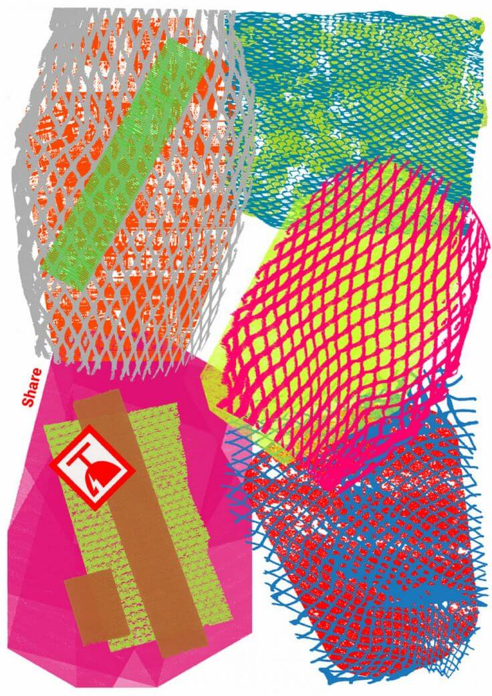
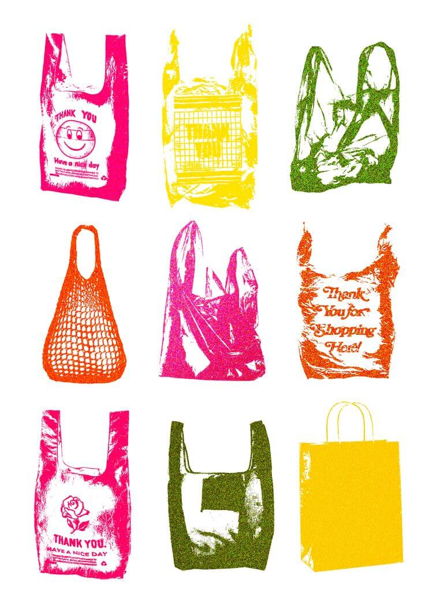

Mengubah sisa kain spunbond dan tutup botol bekas menjadi gantungan kunci yang unik, ringan, dan punya cerita.

Trashtastic lahir dari satu pertanyaan sederhana: mau diapakan semua sisa kain spunbond yang menumpuk itu? Alih-alih membiarkannya berakhir di tempat sampah, kami memilih untuk mengubahnya menjadi sesuatu yang bisa kamu pakai sehari-hari.
Kami adalah proyek kreatif berbasis daur ulang yang fokus pada pemanfaatan limbah kain spunbond, yaitu bahan yang paling sering dipakai untuk tas belanja dan perlengkapan event, tapi sayangnya juga paling sering terbuang begitu saja setelah digunakan. Di Trashtastic, potongan-potongan sisa itu kami jemput sebelum sempat jadi sampah.
Produk andalan kami adalah gantungan kunci dari sisa kain spunbond yang dipercantik dengan patch tutup botol gelas bekas. Setiap buahnya unik, ringan, dan punya cerita tersendiri.
Kami percaya menjaga lingkungan tidak harus terasa berat. Bisa dimulai dari hal kecil, seperti memilih produk yang dibuat dengan niat baik.
Contact UsSetiap produk unik dan punya cerita tersendiri


Fakta-fakta seru tentang spunbond dan dampaknya
Kamu mungkin sering lihat kain spunbond di mana-mana, tapi tahukah kamu kalau bahan ini sebenarnya cukup bermasalah kalau tidak dikelola dengan baik? Ini beberapa fakta seru yang bikin kami makin semangat bergerak.

Kalau dibiarkan begitu saja, bahan ini bisa bertahan ratusan tahun sebelum benar-benar hancur.
Padahal ukurannya masih cukup besar dan kondisinya masih bagus. Dari situlah bahan baku kami berasal.
Kedengarannya kecil, tapi kalau dikali terus, angkanya lumayan signifikan.
Satu produk, dua masalah teratasi — spunbond dan tutup botol gelas bekas sekaligus.
Kami mengumpulkan potongan kain spunbond sisa dari konveksi, event organizer, dan rumah tangga yang biasanya langsung dibuang begitu saja.
Tutup botol gelas plastik dikumpulkan, dicuci, dan dipilih berdasarkan bentuk dan warna yang menarik untuk dijadikan patch dekoratif pada gantungan kunci.
Spunbond dipotong dengan ukuran presisi, lalu dijahit dan dirangkai menjadi bentuk gantungan kunci. Patch tutup botol dipasang sebagai aksen unik di setiap buah.
Setiap gantungan kunci diperiksa kualitasnya sebelum dikemas dengan packaging ramah lingkungan dan siap menemani perjalananmu.
Kami tidak punya ambisi muluk-muluk. Kami cuma ingin menunjukkan bahwa sampah yang kelihatannya tidak berguna pun bisa punya kehidupan kedua kalau ada yang mau repot sedikit.
We are ready to help you
Punya pertanyaan atau mau pesan produk? Jangan ragu untuk menghubungi kami kapan saja.